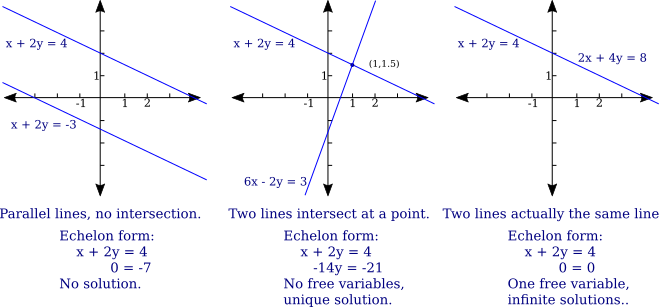
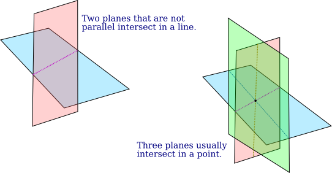
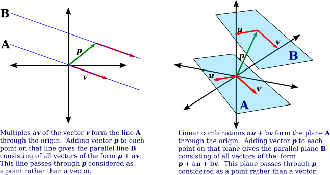

04 Linear Geometry and Linear Systems
We have been looking at the solutions of systems of linear equations and at the geometry of vectors. In this section, we consider more about how those topics relate.
When we solve a system of linear equations, each equation has a solution set, and the solution set for the system as a whole is the intersection of the solution sets for all of the individual equations. What does this look like geometrically?
The solution set of a single linear equation $ax+by=c$ is a line in $\R^2$, containing all points $(x,y)$ for which the equation is true. (Or we could say that the solution set contains vectors $\big(\begin{smallmatrix}x\\y\end{smallmatrix}\big)$ for which the equation is true—you will need to be willing to switch back and forth between vectors and points.) If we consider a system of two equations $ax+by=e$ and $cx+dy=f$, the solution set will be the intersection of the solution set of $ax+by=e$ with the solution set of $cx+dy=f$. This is the intersection of two lines, which is either empty, or a single point, or a line. After the system is reduced to echelon form, it is easy to tell which of these cases is correct.

Adding more equations will not change the possible geometries of the solution sets. In echelon form, the new equations will either become zero rows, which have no effect on the solution, or they will be of the form $0=k$ where $k$ is not zero, which will mean that the solution set is empty.
When looking at a system with three variables, the solution set of a single equation $ax+by+cz=d$ is a plane. For two equations, the solution set is the intersection of two planes, which can be either empty, or a line, or a plane. This is a little harder to visualize than the two-variable case, but you should be able to convince yourself that the intersection of two planes is a line, unless the planes are parallel or identical. Adding a third equation and a third plane adds the possibility that the intersection can be a single point.

And adding more equations will not add other types of solution set. So for a linear system with three variables, the solution will be either empty, or a point, or a line, or a plane. Lines and planes are examples of linear spaces. Any line looks geometrically like $\R$, and any plane looks like $\R^2$, so they are considered to be linear spaces of dimension 1 and 2. A point can be considered a linear space of dimension zero.
When we move to equations with more than three variables, we need to stretch our imagination to linear spaces of higher dimension. A linear space looks geometrically like $\R^m$ for some $m$. The solution set for a single linear equation in $n$ variables is a linear space of dimension $n-1$. The solution set for a system of $k$ linear equations in $n$ variables is the intersection of $k$ linear spaces of dimension $n-1$. The result is a linear space of dimension less than or equal to $n-1$.
So, one geometric approach to understanding the solution set of a system of linear equations is to look at intersections of linear spaces. A second geometric approach uses linear combinations of vectors. We have seen that the solution set, when it is non-empty, can be written in the form $\{\vec p + a_1\vec v_1 + a_2\vec v_2 + \cdots + a_k\vec v_k \,|\, a_1,a_2,\dots,a_k\in\R\}$ (where $k$ is zero if there is a unique solution). Leaving $\vec p$ aside for the moment, the sum $a_1\vec v_1 + a_2\vec v_2 + \cdots + a_k\vec v_k$ is a linear combination of the vectors $\vec v_1, \vec v_2, \dots, \vec v_k$, that is, it is a sum of those vectors multiplied by scalars. If you take this sum for all possible values of the scalars $a_1,a_2,\dots,a_k$, the result is a linear space. When $k=1$, you get all multiples of $v_1$, which gives a line. When $k=2$, the result is a plane (unless $\vec v_2$ happens to be a multiple of $\vec v_1$). When $k=3$, you get a linear space of dimension 3 (or possibly less, if there is some redundancy in the vectors). And so on. Furthermore, this linear space contains the origin, which you get by taking every $a_i$ to be 0. To get the solution set in the case where $\vec p\ne 0$, you need to add $\vec p$ to every point in $\{a_1\vec v_1 + a_2\vec v_2 + \cdots + a_k\vec v_k \,|\, a_1,a_2,\dots,a_k\in\R\}$. This displaces the linear space by the vector $\vec p$ away from the origin, giving a linear space that contains the point $\vec p$. (Again, you need to be able to switch back and forth between points and vectors.)

And there is a third geometric approach, which uses the fact that a system of linear equations can be written as a vector equation. Consider the general linear system of $m$ equations in $n$ variables: $$\begin{align*} c_{11}x_1 + c_{12}x_2 + \cdots + c_{1n}x_n &= a_1\\ c_{21}x_1 + c_{22}x_2 + \cdots + c_{2n}x_n &= a_2\\ &\vdots\\ c_{m1}x_1 + c_{m2}x_2 + \cdots + c_{mn}x_n &= a_m \end{align*}$$ which can also be represented as the augmented matrix $$\left(\begin{array}{cccc|c} c_{11} & c_{12} & \cdots & c_{1n} & a_1\\ c_{21} & c_{22} & \cdots & c_{2n} & a_2\\ \vdots&\vdots&\ddots&\vdots&\vdots\\ c_{m1} & c_{m2} & \cdots & c_{mn} & a_m \end{array}\right)$$ We can consider the columns in the matrix to be column vectors, and write the system as $$x_1\begin{pmatrix} c_{11}\\ c_{21}\\ \vdots\\ c_{m1}\end{pmatrix} + \;x_2\begin{pmatrix} c_{12}\\ c_{22}\\ \vdots\\ c_{m2}\end{pmatrix} + \dots + \;x_n\begin{pmatrix} c_{1n}\\ c_{2n}\\ \vdots\\ c_{mn}\end{pmatrix} = \begin{pmatrix} a_1\\ a_2\\ \vdots\\ a_m\end{pmatrix}$$ or, giving names to the vectors, $$x_1\vec c_1 +x_2\vec c_2 +\cdots + x_n\vec c_n = \vec a.$$ The left hand side of this vector equation is a linear combination of the column vectors, $c_1,c_2,\dots,c_n$, from the left side of the augmented matrix, where the scalars are the variables $x_1,x_2,\dots,x_n$. If you take all possible values of the variables, what you get geometrically is a linear space in $\R^m$ that passes through the origin. (The space is in $\R^m$ since the vectors are of length $m$.) The system of equations has a solution if and only if the vector $\vec a$, from the right hand side of the equations, is an element of this linear space—that is, it can be written as a linear combination of the coefficient vectors $\vec c_1,\vec c_2,\dots,\vec c_n$.
As an example, consider the system $$\begin{align*} x-2y&=4\\ -x+3y&=-5\\ 2x+y&=3\end{align*}$$ In this case, we need to look at linear combinations of the coefficient vectors $\vec c_1=\bigg(\begin{smallmatrix} 1\\ -1\\ 2\end{smallmatrix}\bigg)$ and $\vec c_2=\bigg(\begin{smallmatrix} -2\\ 3\\ 1\end{smallmatrix}\bigg)$. The set of all possible linear combinations of these vectors is a plane in $\R^3$. The question is whether that plane contains the point $\vec a=\bigg(\begin{smallmatrix} 4\\-5\\3 \end{smallmatrix}\bigg)$. You can check that it does (take $x=2$ and $y=-1$). Of course, most points in $\R^3$ do not lie on the plane, so changing the right-hand sides of the equations to almost any other values will produce a system that has no solutions.